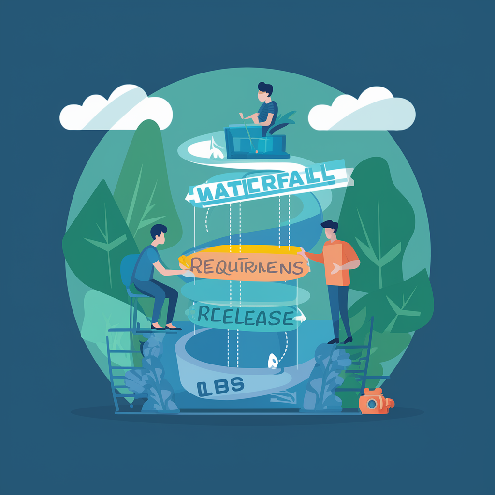

왜 Scrum을 도입하게 되었는가
계기
원래는 워터폴(폭포수 방법론)
요구사항 정의 → 시스템 설계 → 구현 → 테스트 → 배포
명확한 단계가 장점
하지만...
문서 작성에 시간을 너무 사용
요구 사항과 계획을 세부까지 모든 것을 설계하고 개발에 착수하기 때문에 시간과 자원을 대량으로 소비
초기에 작성된 설계에 다음 단계에서 변경이 필요하게 되었을 경우
수정도 어려움
사용자 피드백이 늦다
 요구사항 정의부터 릴리스까지 리드 타임이 길기 때문에 피드백을 즉시 반영할 수 없다
팀의 사기저하
개발 초기에 설정된 목표가 갈수록 불투명 해짐(=잊혀지기 쉬움)
도중에 안건이 불필요하게 되면, 팀의 퍼포먼스나 제품 품질에도 악영향
Scrum 개발의 이점에 주목하다
짧은 릴리스 사이클
짧은 기간 만큼 규모도 작게 관리할 수 있다
기대 되는 효과
문서 작성에 시간을 너무 사용
짧은 기간동안 작성하는 문서의 양도 줄어들 것
사용자 피드백이 늦다
Sprint Review를 통해 더 빠른 단계에서 개선점을 찾아내고 다음 단계를 검토할 수 있는 기회가 있다.
팀의 사기저하
서비스에 공헌하고 있다는 실감을 팀 멤버가 느끼기 쉬울 것
Last modified: 18 4월 2024